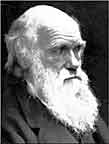

2005

Darwin said, "You cannot observe without a theory."
I don't think this means we're supposed to run out and get a theory. Rather, it means we already have one, and we should be explicit about it, and think about how it limits our observations. If our observation theory is stupid or inconsistent, conclusions we base on our observations will probably be incoherent and contradictory.
Eddington's example is that if we search the oceans with a net that has a one-inch mesh, we cannot conclude anything about the properties or existence of fish less than an inch long.
I want a theory of software bugs, that explains what happens in the instant when a bug is introduced into a program. Then I will be able to observe bugs in a way that guides me to avoid later bugs.
Some papers on program complexity metrics seem to have an implicit theory something like "Bugs are like alpha particle decay: they happen uniformly to all lines of code, all programs, all programmers," at least for a large sample. Using this theory, they reason that the larger a program is, the more bugs it will have. Subtler versions of this theory suggest that this size should be measured in function points, paths, or basic blocks.
What I observe is that some programs have lots of bugs and some don't have many, not correlated with their size, however measured. Other factors, like who worked on the code, what tools and methods were used to create it, and how well the requirements for the module are understood, are much better predictors of future bugs.
I had a heck of a time tracking down the Darwin quote. The words I quote appear to be from Chesterton, in "Acting, Thinking, Theorizing" in 1926. The notion may derive from Kant, who said "knowledge without theory is blind." Eddington's fish are in The Philosophy of Physical Science.
Here is another quote, from Werner Heisenberg: "What we observe is not nature itself, but nature exposed to our method of questioning." (in Physics and Philosophy: The Revolution in Modern Science.)
Copyright (c) 2005 by Tom Van Vleck